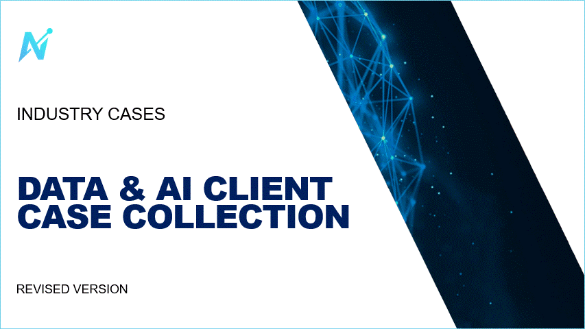
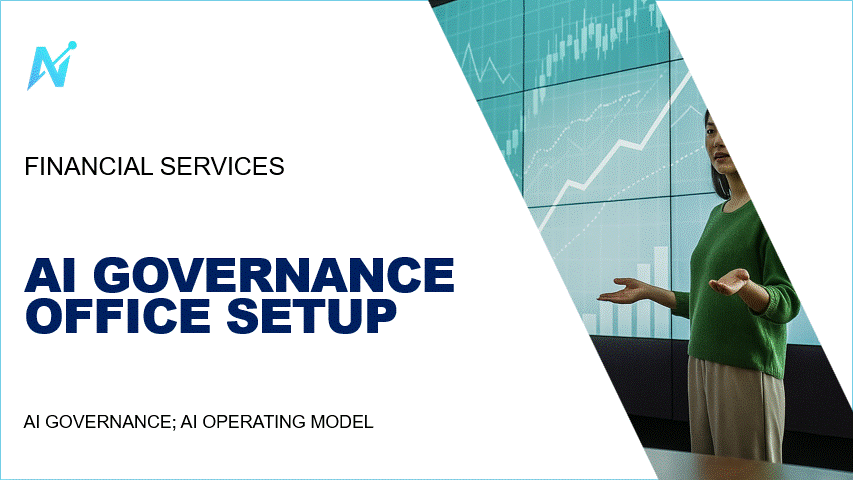
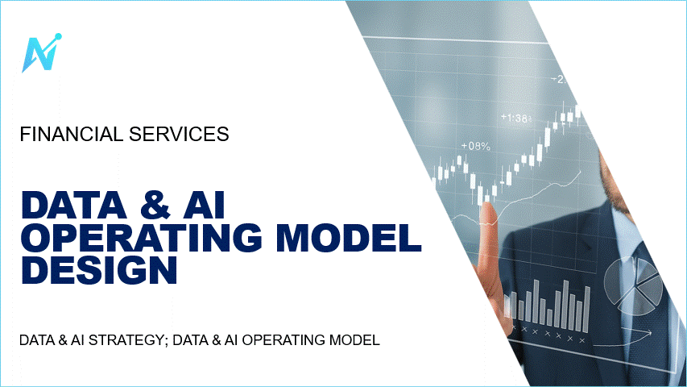
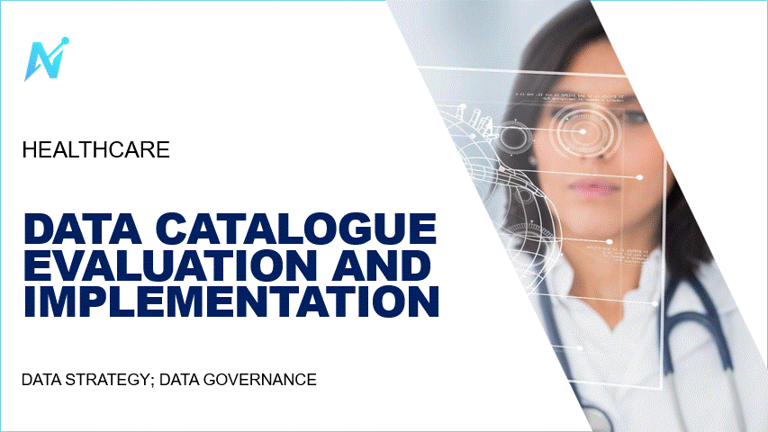
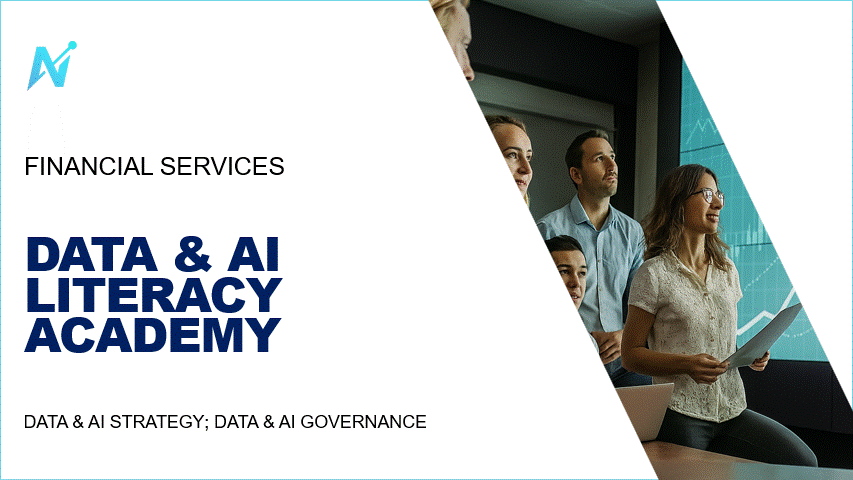
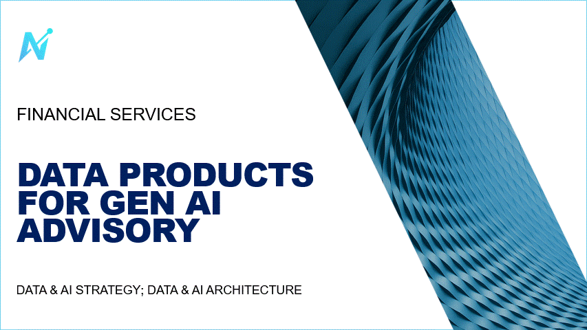
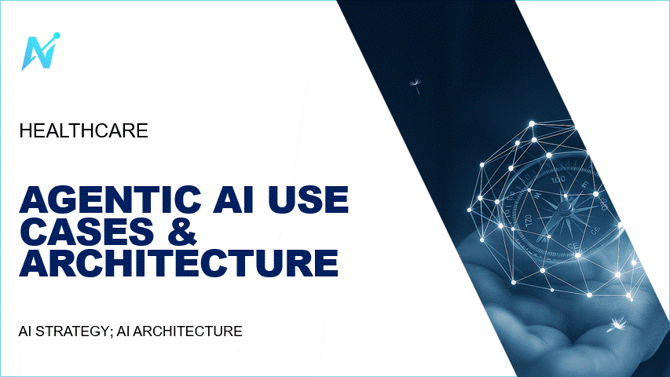

Schulung
AI Literacy
Briefing für Geschäftsleitung und Verwaltungsrat, Grundschulung der Mitarbeitenden, jährliche Auffrischung. Mit Lehrplan, Schulungsregister und Teilnahmenachweisen.
Mehr erfahren
Verlässlich im Alltag, belastbar vor Aufsicht und Revision.
Für beaufsichtigte Unternehmen in Finanz und Gesundheit. Verzeichnis, Freigaben, Verantwortliche, Nachweise: die Arbeit, die KI und Daten verlangen, damit Sie die Kontrolle behalten und Zeit gewinnen.
Die Anforderungen an den Einsatz von KI und Daten entwickeln sich laufend weiter: Rundschreiben und Aufsichtsmitteilungen der FINMA, die KI-Verordnung der EU bei Bezug zum EU-Markt, das revidierte Datenschutzgesetz. Die FINMA hat ihre Erwartungen an KI aus eigenen Aufsichtsprüfungen abgeleitet, auch vor Ort; die Prüfgesellschaften prüfen risikoorientiert, mit über die Jahre wechselnden Fokusthemen.
Brightup deckt diese Anforderungen als externe Abteilung laufend ab: mit klaren Verantwortlichkeiten, dokumentierten Prozessen und Nachweisen, die einer Prüfung standhalten.
Grundlagen: FINMA-Rundschreiben zu operationellen Risiken und Resilienz, zu Corporate Governance und zur Auslagerung; FINMA-Aufsichtsmitteilungen zu künstlicher Intelligenz; die EU-KI-Verordnung bei Bezug zum EU-Markt; die BaFin als Marktüberwachung für KI im deutschen Finanzsektor; Datenschutzgesetz, DSGVO und EDÖB.
Einzeln buchbar oder als laufender Dienst gebündelt. Sie steigen dort ein, wo Ihr Unternehmen heute steht.
Briefing für Geschäftsleitung und Verwaltungsrat, Grundschulung der Mitarbeitenden, jährliche Auffrischung. Mit Lehrplan, Schulungsregister und Teilnahmenachweisen.
Mehr erfahrenVier bis sechs Wochen: Inventar aller Anwendungen inklusive Drittanbieter, Risikoklassen, Lückenanalyse gegen die Erwartungen der Aufsicht, Rollen und formelle Benennung.
Mehr erfahrenStandardisierte Prüfung je Anbieter oder je KI-Funktion in einem bestehenden System: Datenfluss, Modellherkunft, Vertragsklauseln, Restrisiko, Freigabeempfehlung.
Mehr erfahrenEine benannte Ansprechperson, die Ihre KI-Governance führt oder Ihr Team darin verstärkt: Verzeichnis, Freigabe neuer Anwendungen, Prüfung von Drittanbietern, Quartalsbericht an Geschäftsleitung und Verwaltungsrat, Schulung, Begleitung von Revision und Aufsicht.
Mehr erfahrenEine benannte Ansprechperson für Ihre Daten: kritische Daten und ihre Verantwortlichen, Datenkatalog und Datenprodukte, Regeln zur Datenqualität, auf Wunsch mit externem Datenschutzberater nach DSG und DSGVO. Die Grundlage dafür, dass KI-Ergebnisse erklärbar bleiben.
Mehr erfahrenWir prüfen, was Sie schon haben: Operating Model, Data & AI Framework, KI-Weisung, Inventar. Zwei bis drei Wochen, schriftlicher Befund mit Lücken und Massnahmen, bevor die Revision kommt.
Mehr erfahrenJede Stufe hat einen eigenen Auslöser und ein eigenes Ergebnis. Sie steigen dort ein, wo Ihr Unternehmen steht, und bleiben so lange, wie es Sinn ergibt.
AI Governance Officer als Dienst: vier Stufen, begleitet von einer benannten Ansprechperson, die Ihre KI-Governance gegenüber Geschäftsleitung, Revision und Aufsicht vertritt.
Inventar der KI-Anwendungen inklusive Drittanbieter, Risikoklassen, Rechtslage nach FINMA, KI-Verordnung und Datenschutz. Befund mit Lücken.
Rollen, Gremien und Prozesse definiert, KI-Weisung und Freigabeprozess, Zuordnung jeder Massnahme zu den Erwartungen der Aufsicht. Formelle Benennung.
Freigaben laufen, Drittanbieter sind geprüft, Mitarbeitende geschult mit Nachweis, Kontrollen im Betrieb verankert.
Verzeichnis aktuell, Quartalsbericht an Geschäftsleitung und Verwaltungsrat, Begleitung von Revision und Aufsicht, jährliche Auffrischung.
Data Governance Officer als Dienst: vier Stufen, von der Datenlandkarte bis zum laufenden Betrieb, für kritische Daten und die Grundlage erklärbarer KI.
Kritische Daten identifiziert und klassifiziert, Datenflüsse und Systeme erfasst, Lücken gegen die Erwartungen der Aufsicht benannt.
Datenverantwortliche und Stewards benannt, Regeln zu Qualität, Zugriff und Aufbewahrung, Datenweisung, Gremium und Prozesse.
Datenkatalog und Datenprodukte aufgebaut, Metadaten gepflegt, Herkunft nachvollziehbar. Die Grundlage für erklärbare KI.
Datenqualität gemessen, Abweichungen bearbeitet, Bericht an die Geschäftsleitung, Begleitung der Prüfung.
Expert Check: drei Schritte in zwei bis drei Wochen. Eine unabhängige Zweitmeinung zu dem, was Sie schon haben, bevor die Revisionsstelle kommt.
Wir lesen, was Sie haben: Operating Model, Data & AI Framework, KI-Weisung, Inventar, Gremienprotokolle.
Zwei Gespräche mit den Verantwortlichen aus Fachbereich, IT und Kontrollfunktionen. Was steht auf dem Papier, was gilt im Alltag.
Schriftlich: Lücken gegen die Erwartungen der Aufsicht, Prioritäten, Massnahmen mit Aufwand. Besprochen mit Ihrer Geschäftsleitung.
Was wir mitbringen und worin wir arbeiten. Wählen Sie eine Kachel für die Erläuterung.
Zertifizierung der IAPP für KI-Governance: Rechtsrahmen, Risikomanagement und Lebenszyklus von KI-Systemen, von der Beschaffung bis zur Ausserbetriebnahme. Persönliche Zertifizierung, alle zwei Jahre zu erneuern.
Ein Blick in unsere Fälle aus Banken, Versicherungen und Spitälern, von der strategischen Ausrichtung über die Governance bis zur technischen Umsetzung. Die vollständige Sammlung senden wir Ihnen auf Anfrage zu.

Sieben Fälle aus Finanz und Gesundheit, von der Strategie bis zum Betrieb.

AI Governance; AI Operating Model

Data & AI Strategy; Data & AI Operating Model

Data Strategy; Data Governance

Data & AI Strategy; Data & AI Governance

Data & AI Strategy; Data & AI Architecture

AI Strategy; AI Architecture
Wir senden sie Ihnen an Ihre geschäftliche Adresse. Keine Newsletter, keine Weitergabe.
Sammlung per E-Mail anfordernBrightup ist die externe Abteilung für KI- und Datengovernance von beaufsichtigten Unternehmen in Finanz und Gesundheit.
Dahinter stehen Jahrzehnte Erfahrung in der Schweiz, in Banken, Versicherungen und Spitälern: Wir haben Data- und AI-Abteilungen aufgebaut, Betriebsmodelle mit Rollen, Gremien und Prozessen eingeführt, Plattformen und Datenprodukte aufgesetzt und Verzeichnisse für KI-Anwendungen und Metadaten erstellt. Als interimistische Verantwortliche, die der Revisionsstelle selbst Rede und Antwort standen.
Wir gehen die Erwartungen von Aufsicht und Revision mit Ihnen durch, ordnen ein, was bei Ihnen bereits erfüllt ist, und nennen die Punkte, die offen sind. Sie erhalten unsere Einschätzung und die Zuordnungstabelle für Ihr Unternehmen.